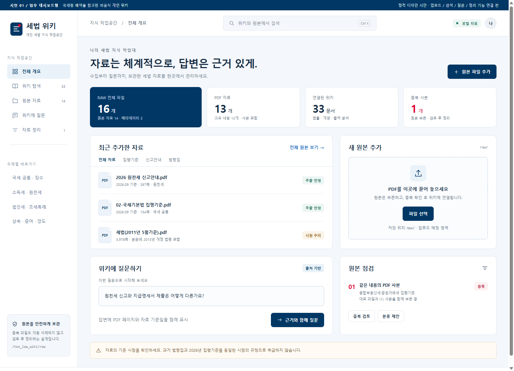
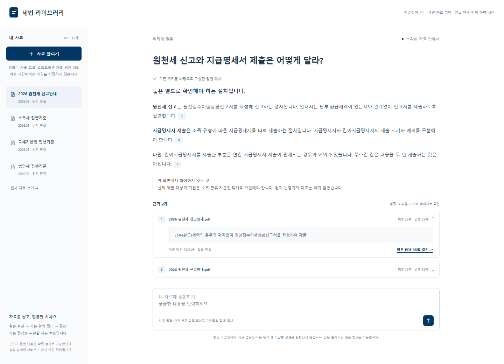
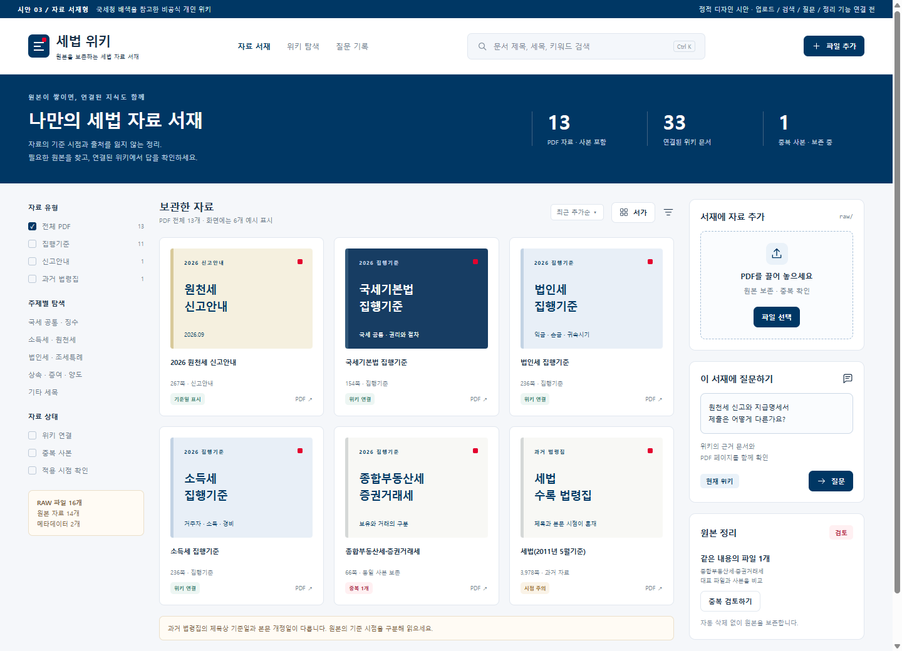

01 · 관리 중심
업무 대시보드
보관 현황, 자료 추가, 질문, 원본 점검을
한눈에 확인하는 관리 중심의 시작 화면.
RAW 현황 → 최근 자료 → 질문과 정리
자주 들어와 자료를 관리하는 사용 흐름
자주 들어와 자료를 관리하는 사용 흐름
국세청의 청·홍·백 배색을 참고한 세법 위키 디자인입니다.
같은 기능을 서로 다른 사용 흐름으로 구성했습니다.

보관 현황, 자료 추가, 질문, 원본 점검을
한눈에 확인하는 관리 중심의 시작 화면.

필요한 자료를 올리고, 정리된 위키에 질문.
통계와 관리 메뉴 없이 답변과 근거에 집중.

책 표지처럼 원본을 둘러보고, 자료 유형과
주제로 좁혀 가는 문서 탐색 중심 화면.
업로드·검색·AI 질문·정리는 기능 연결 전의 시각적 시안입니다. PDF 쓰기·이동·삭제나 질문 외부 전송은 수행하지 않습니다. 자료 서재의 표지는 실제 PDF 썸네일이 아닌 시안용 표지입니다.
RAW 16개 = 자료 14개 + 메타데이터 2개.
PDF 13개 / 고유 PDF 내용 12개 / 중복 사본 1개 / 위키 33문서.
색상은 국세청을 참고하되 정부상징과 공식 기관 로고는 사용하지 않았습니다.